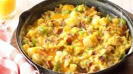

Scrambled Eggs

I hope you like scrambled eggs!
This recipe will help you to make country style scrambled eggs! This dish goes great with almost any southern style breakfast, and it makes a fantastic main dish for the meal.
Ingredients
- 8 bacon strips
- 2 cups diced red potatoes
- 1/2 cup chopped onion
- 1/2 cup chopped green pepper
- 8 large eggs
- 1/4 cup 2% milk
- 1 cup shredded cheddar cheese
- 1 teaspoon salt
- 1/4 teaspoon pepper
Steps
- In a 9-in. cast-iron skillet, cook bacon over medium heat
- use bacon fat to cook and stir potatoes for 12 minutes or until tender
- add onion and green pepper. Cook and stir for 3-4 minutes or until crisp; drain skillet
- Stir in bacon
- in a large bowl, whisk the eggs, milk, salt and pepper; add to skillet
- cook and stir until eggs are completely set.
- sprinkle with cheese and stir in until melted